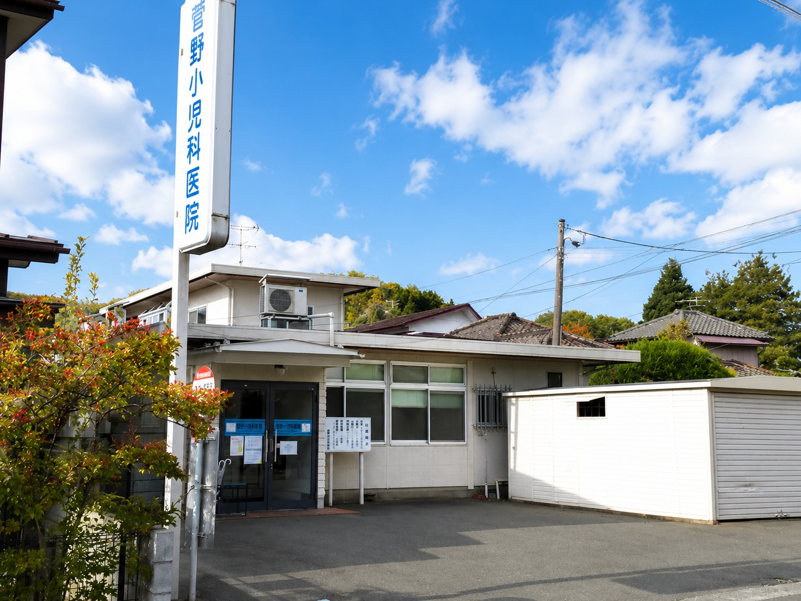

ホームページを公開しました
菅野小児科医院のホームページを公開しました。診療時間や予防接種に関する情報を掲載しています。
Information
菅野小児科医院のホームページを公開しました。診療時間や予防接種に関する情報を掲載しています。
予防接種、免疫保有状況、海外渡航・留学前の接種相談については、お電話にてお問い合わせください。
症状やご相談内容によってご案内が異なる場合があります。ご来院前にお電話での確認をお願いいたします。
About us
お子さまの健やかな成長に寄り添い、地域の皆さまに信頼される医療を大切にしています。
院長
お子さまの体調や成長について、気になることを安心してお話しいただける診療を心がけています。
当院の特徴

Our clinic
長年にわたり、盛岡市山岸で地域のお子様の健康を支えてきました。菅野小児科医院は、地域密着型の小児科として、お子様の体調不良はもちろん、予防接種や免疫保有状況、海外渡航・留学前の予防接種相談にも対応しています。
Symptoms
お子様の体調で気になることがありましたら、どうぞお気軽にお電話ください。
Medical services
お子さまの日々の体調から健やかな成長、予防接種まで幅広くご相談ください。
発熱、せき、鼻水、腹痛など、お子さまの体調不良をご相談ください。
定期・任意の予防接種や、成人の予防接種についてご相談いただけます。
お子さまの成長や発達、子育ての中で気になることを一緒に確認します。
海外渡航・留学前の予防接種や、免疫保有状況についてご相談いただけます。
予防接種・健診をご希望の方は、事前にお電話でお問い合わせください。
Consultation hours
| 曜日 | 午前 | 午後 |
|---|---|---|
| 月 | 9:00〜12:00 | 14:00〜17:00 |
| 火 | 9:00〜12:00 | 休診 |
| 水 | 9:00〜12:00 | 14:00〜17:00 |
| 木 | 9:00〜12:00 | 13:30〜17:00 |
| 金 | 9:00〜12:00 | 14:00〜17:00 |
| 土 | 9:00〜12:00 | 13:30〜15:00 |
| 日・祝 | 休診 | 休診 |
火曜日午後、日曜日、祝日は休診です。
Access